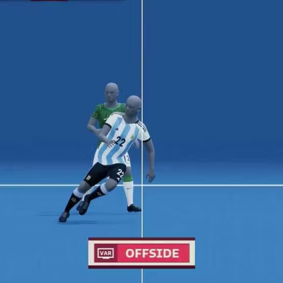

SAOT / Modélisation 3D
Hors-jeu semi-automatique : la FIFA modélise chaque joueur en 3D avec des avatars IA
Pour la Coupe du Monde 2026, la FIFA va scanner numériquement chacun des 1 248 joueurs afin de créer des avatars 3D personnalisés. Le système SAOT utilise 12 caméras qui traquent 29 points du corps de chaque joueur 50 fois par seconde. Combiné au capteur IMU intégré au ballon (500 données/seconde), le système reconstruit une animation 3D précise de la position des membres au moment exact de la passe, permettant des décisions de hors-jeu au millimètre.
FIFA / Lenovo Tech World — CES 2026